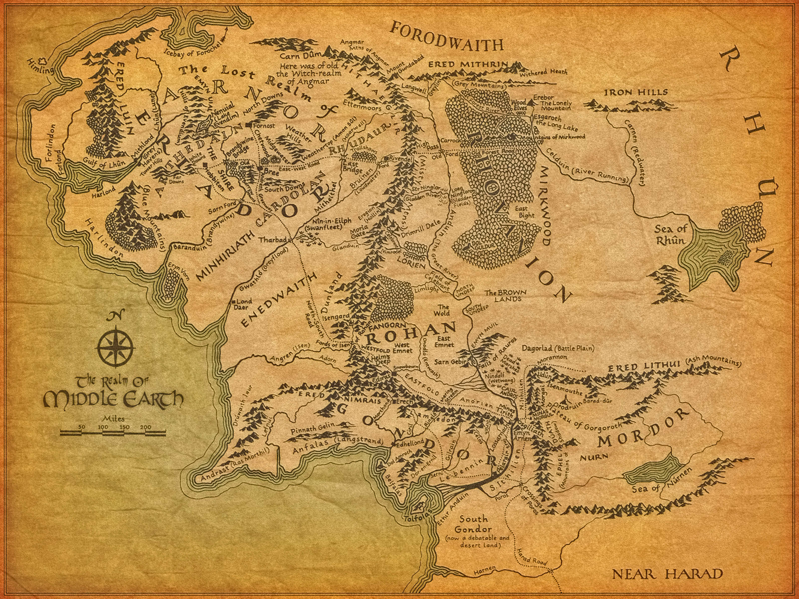

Map of the Middle-earth
This map will surely help you finding your way when you're lost.
- Click on the feathers to visit other places

Before going on this extraordinary adventure waiting for you, you will need to learn about Middle Earth. For the world outside The Shire is way bigger than you think..
Here, you will learn about part of this world's history (for it is to great to tell it all) and geography. Make yourself at ease, for there is a lot to be learned.This map will surely help you finding your way when you're lost.
Here is a simplified explanation of this story:
This tale begins with Ilúvatar's creation of spirits of lesser power than him, yet of independent nature, named the Ainur ("Holy Ones"). Ilúvatar taught them music, and they sang before him, but each one alone. He showed them the most beautiful theme and asked them to sing together a Great Music in which their thoughts would be visible thanks to the Flame Imperishable. Thus began the Music of the Ainur. No music like this was sung again, though it is said that the Ainur will sing a Second Music with the Children of Ilúvatar.
In the beginning of the Music, Ilúvatar sat and hearkened, but Melkor, one of the greatest of the Ainur, in his pride broke the harmony. Ilúvatar then arose and a new theme began against the disturbance, and which Manwë, Melkor's brother, sang the leading part. Yet again, the harmony was broken with Melkor's violent song.
Finally, Ilúvatar began a third theme which the Ainur could not comprehend. He then ceased the music and showed to the Ainur the essence of what their song symbolized, the history of a whole world. This is known as the "Vision of Ilúvatar". The Ainur became fascinated by it, and wished that Ilúvatar put it into being.
Ilúvatar spoke "Eä! Let these things Be!". This command created the universe, and therefore the universe became known as Eä. Some of the Ainur who possessed the greatest power entered into Eä and they were called the Valar, the "Powers of the world", as their mission was to form the world for the coming of the Children of Ilúvatar. Therefore they created a region which later was called Arda, the Earth, but Melkor attempted to take it for his own. However Manwë asked for the help of other Ainur, great or lesser. They descended to Arda and Melkor was forced to flee to other regions.
The Valar took the shapes of the Children of Ilúvatar, and their beauty and works increased Melkor's envy, so he also took visible form. The First War began in the world, in which Melkor tried to destroy all the works of the Valar, but at last the habitation of the Children of Ilúvatar was established.
Valar (the "Powers of Arda") is the name given to the chief Ainur following their descent to Arda. The Ainur were angelic spirits created by the supreme deity, Ilúvatar. The most powerful of the Valar was Melkor, who became corrupt, and ceased to follow the will of Ilúvatar. The fourteen remaining Valar continued in Ilúvatar's will.
The Ainur had either male or female forms, some were couples, while some were siblings in Ilúvatar's mind. Thus, there were seven male Valar, and seven female (Valier). Of the fourteen, those eight with the greatest might (called Aratar) were responsible for some attribute of life in Arda (e.g., crafts, mining, agriculture, etc.). The king of the Valar, and of all Arda was Manwë.
On their descent to Arda, the Valar, were followed by Ainur of lesser might, the Maiar, who were their subjects, students and assistants in governing Arda. The Valar had the ability to change their physical appearance, or to bear no shape at all.
Of the enemies are mentioned Melkor, Sauron and the Balrogs, spirits who were seduced by him and fell into hate.
After the Valar's entrance, Arda was still lifeless and had no distinct geographical features. The initial shape of Arda, chosen by the Valar, was of a symmetrical continent lit by two lamps: one in the continent's north, and one in the south. However the lamps were destroyed by the vicious Melkor. Arda was again darkened, and the lamps' fall spoiled the perfect symmetry of Arda's surface. Two main continents were created that are of concern to the story: Aman on the far West, and Middle-earth to the East, over the Great Ocean.
Following this, Melkor hid himself from the Valar in an enormous fortress, Utumno. He also surrounded himself with horrible beasts, many of them Maiar in the form of fell animals, known as Balrogs. Balrogs were to remain his most faithful servants and soldiers ever after.
The Valar then made for themselves a home at the utmost West, upon Aman. Then the Valar began to reshape Arda yet again, making it habitable and preparing it for the coming of the Children of Ilúvatar: Elves and Men. However everywhere they went, Melkor followed them spoiling the fruit of their labour and damaging their achievements. Thus, all of Arda was marred by Melkor's anger, envy and lust of power.
Utumno did not protect Melkor, however. He was taken prisoner and sentenced to three ages (about 9,000 years) of imprisonment. Utumno was laid bare; but all its evil was not destroyed. Before Melkor was taken captive, Arda witnessed the Awakening of the Elves, the first-born Children of Ilùvatar. Elves are described as anthropomorphic beings, who, however, are immortal and possess many virtues (beauty, health, ability to communicate with nature), beyond the share of Men. The Elves were met by the Valar and invited to join them in the West; however Melkor managed to reach some of the Elves even earlier. It is said that from them he bred the hideous race of Orcs whom both he and his follower Sauron used as soldiers.
Some of the Elves refused to go westward. They became known as the Avari. Two houses of the Elves, the Vanyar and the Noldor crossed the Great Sea with the help of the Valar. A third house, called the Teleri lingered on the eastern shore of the Great Sea and in the west of Middle-earth. Eventually many of the Teleri crossed the Great Sea, but some Teleri remained in Middle Earth. The groups of Teleri that remained are termed Sindar, Nandor and Falathrim.
At some time between the imprisonment of Melkor and his release, the Valar created the Two Trees, Laurelin and Telperion, which filled Valinor with light.
There arose a mighty Elf among the house of Noldor, named Fëanor. Fëanor was skilled in crafts and his greatest achievement has been the making of three wonderful jewels, the Silmarils. The Silmarils contained the light of the Two Trees of Valinor.
By that time Melkor's captivity was over. However he returned to evil quickly. Through a vicious design he managed to destroy the Two Trees and to steal the Silmarils. Then he fled eastward, to the Middle-earth.
The furious Fëanor followed Melkor (whom he re-named Morgoth). This was done against the will of the Valar, and during Fëanor's flight he slew many of the Teleri, over their refusal to lend him their ships (First Kinslaying). For this he and his followers were forbidden to approach Aman ever again. However, Fëanor ignored this punishment and managed to cross the Great Ocean eastward. There he joined with the Sindar, who had been in Middle-earth all along. Years after this flight, in order to diminish the darkness, the Valar launched the Sun, so that it would dissolve Melkor's shadows.
Morgoth, having returned to Middle-earth, fortified his previous secondary fortress, Angband with its capital at Thangorodrim. From there he waged war upon the Sindar. However, with the help of the Noldor who had just crossed the Ocean, the first onslaught of Morgoth's attack was thrown off.
Following this, the Noldor settled with the Sindar in the West of Middle-earth, known as Beleriand. They adopted the Sindarin language instead of their native Quenya. This period of relative peace and stability was short-lived (at least by the Elves' standards). One of the first victims of this war was Fëanor himself. As time passed, Morgoth gathered more and more force.
Three hundred years after the coming of the Noldor to Beleriand, Middle-earth witnessed the awakening of Men, the Secondborn (or the Followers). Most of them allied with the Elves in order to defend Beleriand from Morgoth. However neither Elvish skill, nor Mannish resolve succeeded in defying him. One after another, the domains of Elves and Men were destroyed and filled with evil.
At last, more than five centuries after the flight of the Noldor, Eärendil, the son of an Elf-woman and a Man set sail to the West with the only Silmaril that his ancestors managed to recover. He was allowed to land in Aman, and to plead with the Valar for mercy towards the Elves and Men.
The Valar agreed to pardon the Noldor. They set out to fight Morgoth and were victorious. Morgoth was expelled from Arda. However during the conflict, the very continent of Beleriand was destroyed and sunk, thus forming a new shoreline for Middle-earth, hundreds of miles to the east.
The Valar offered Elves their forgiveness and the right to come to Aman. Many of them did indeed leave Middle-Earth, weary of centuries of warfare against the ever-growing evil. The tribes of Men that helped the Elves were given a whole island of their own, on which they founded the kingdom of Númenor.
Eärendil, because he possessed both mortal and immortal heritage, was given the opportunity to choose his fate; a gift that was also given to all of his descendants who were born of an immortal parent. His Silmaril became a bright star. One Silmaril was sunk in the water of the Great Ocean, and the third was lost in the depths of the Earth. Thus other than the sun and moon above, no trace remained on Middle-earth of the Two Trees of Valinor; but their influence lives on in the elements: air, water and fire/earth.
At the end of the First Age, the Edain, who alone among the race of Men were loyal defenders of the Elves during their war against Morgoth, were given a new land of their own in reward for their efforts, free from the troubles and sadness of Middle-earth. It was located in the middle of the Great Sea, between the western shores of Middle-earth and the eastern shores of Aman, where the Valar lived.
The Men of Númenor were forbidden by the Valar to sail westward so far that they could no longer see the island, so the majority of their voyaging was eastward and in time they returned to the shores of Middle-Earth. The Númenóreans established remote colonies in Middle-earth and made contact with the Men of Middle-earth and taught them many crafts and skills. They made alliance with Gil-galad and the Elves and aided them in the war against Sauron where he was defeated by the power of the Númenóreans.
Over time many began to speak openly of their envy of the Eldar's immortality and in defiance of the Ban. The people of Númenor became split between the King's Men, those loyal to the King and prone to oppose the restraints upon Númenor, and the Faithful, those who remained true to their friendship with the Eldar and loyalty to the Valar. During this time, the long life of the Númenóreans began to decrease as the Shadow rose. Their joy for life and good will departed, but their power increased.
Sauron re-emerged to challenge the power of Númenor in Middle-earth and their colonies along the shores were assailed by him and his armies. The king, Ar-Pharazôn, responded and came with a great host to Middle-earth and bade Sauron to come before him and swear fealty. To the surprise of many, Sauron did as he was asked. But the King was not content with his show of obedience, and brought Sauron back to Númenor as a hostage. Sauron gave the impression that this was against his will, but in truth it was exactly what he wanted. Sauron exploited his power to corrupt the King to his will. Soon he became his adviser, and most of the Númenóreans obeyed his will and turned to the worship of Morgoth.
Sauron convinced the King, who was now in his twilight years, to assail Aman in order to gain immortality. Thus Ar-Pharazôn led his Great Armament and landed on Aman. However, as this was done, the Valar appealed to Eru Ilúvatar and he destroyed the Great Armament. Ar-Pharazôn and his host were buried under hills, and the whole of Númenor sank under the Great Sea. Arda was made spherical and Aman was put beyond it, out of the reach of mortal Men.
Just a few people still uncorrupted by Sauron managed to escape the catastrophe; they fled Númenor by ship. This group of Faithful Númenóreans was led by Elendil the Tall and his two sons, Isildur and Anárion. They landed in Middle-earth, where the followers of Elendil established two kingdoms which came to be known as the realms of Exile: Gondor in the south, and Arnor in the north. Some of the King's Men, enemies of Elendil, who were in Middle-earth at the time of the Downfall established other realms in exile to the south; of these the Haven of Umbar was the chief. Sauron, although greatly diminished and bereft of shape, had survived the Downfall and returned to Middle-earth to continue troubling its inhabitants.
The Elves of Eregion forged many Rings of Power. But Sauron had deceived them, for he made the One Ring for himself, which was the master of the rest.
However Sauron's plan failed: the Elves discovered his plot and discarded their Rings until they could be shielded from his influence. Sauron then waged war upon the Elves. During the war, many Elves were killed and the kingdom in Eregion destroyed. Sauron captured all the Rings of Power except the Three and he gave seven of them to Dwarves and nine to Men. But Sauron feared to assail Lindon as the Men of Númenor aided Gil-galad, the mighty elvenking. Throughout the Black Years or Days of Flight Sauron gathered to him all the evil things of Days of Morgoth. Hundreds of years later, the Men of Númenor decided to capture Sauron to demonstrate their might. As it is described in Akallabêth, Sauron was brought to Númenor as a slave; however, he soon corrupted most Númenóreans, encouraging them to replace their traditional reverence for Ilúvatar with worship of Melkor, Sauron's previous master. Under Sauron's influence, the Númenóreans decided to challenge the Valar by invading Aman. As a result, Númenor was destroyed and sank beneath the waves.
Only a few survivors left Númenor before it was too late, and led by Elendil the Tall and his two sons Isildur and Anárion, they had settled in Middle-earth. They created realms that were governed in Númenórean style: Elendil ruled over Arnor in the North, and Isildur and Anarion ruled together in the great country of Gondor in the South. However, Sauron survived the disaster, and although he had lost his fair appearance, both he and his One Ring returned safely to his stronghold of old in the land of Mordor.
Years passed, and Sauron, who had renewed his might, decided to attack the new realms while they were still weak. His onslaught failed, however, Elendil, his sons, and the Elven kings fought back. For many years the great coalition (The Last Alliance of Elves and Men, as it became known) besieged Mordor. At last the host broke through to Sauron's fortress Barad-dûr. Gil-galad and Elendil wrestled with Sauron and were slain; however, they managed to defeat Sauron. Isildur, Elendil's son approached Sauron's body and cut off his finger with the One Ring. In vain Elrond and Círdan tried to convince Isildur to destroy the ring in the fire of Mount Doom where it was made. But Isildur took it for his own and declared that it was his and his folk's, a consolation after the enormous loss of the war (besides the death of Elendil, his father, another of those who perished was his brother Anárion, who was killed during the siege of Barad-dûr). Thus began the Third Age of Middle-earth.
Isildur himself died soon in a sudden ambush by a band of Orcs near Gladden Fields, and the Ring that had betrayed him was lost in the great river Anduin. Heirs of royal blood were chosen to lead Arnor and Gondor. For a millennium, both realms enjoyed relative freedom and prosperity. However afterwards, Arnor became subject to attacks from the north-eastern kingdom of Angmar. More and more people fled from the North, and although Angmar was defeated by the beginning of the third millennium of Third Age, Arnor was no more. Its people were scattered, and its royalty decreased in number and fame; however they remained true to their Númenórean descent. They became the Rangers of the North, protecting the paths of the North from the menace that came from the East.
As for Gondor, it prospered for much of the Third Age. However in the beginning of its third millennium, this began to change. Gondor was assailed by Orcs and Men from the nearby Mordor. For a long time, no one suspected that the same force that had driven the attacks upon Arnor was now fighting Gondor.
A thousand years earlier, several Wizards had come to the land: Saruman, Radagast, Gandalf, and two Blue Wizards. Although it was unknown to the peoples of Middle-earth, they were emissaries from the West, sent on behalf of the Valar to help them obtain their freedom. For many centuries they were silent, and little was done by them apart from observation and counsel. However as the times darkened, they decided to take action against a mysterious dark force which seemed to dwell in the fortress of Dol Guldur amidst the forest of Mirkwood. During the attack, the force fled to Mordor and was revealed as Sauron, who was thought to have perished. And in the same year, the One Ring was found.
Sauron made war on Middle-earth again, but Frodo the Hobbit went to Mount Doom and destroyed the Ring, defeating Sauron. After this, it was made clear that Gandalf bore the Red Ring, Narya.